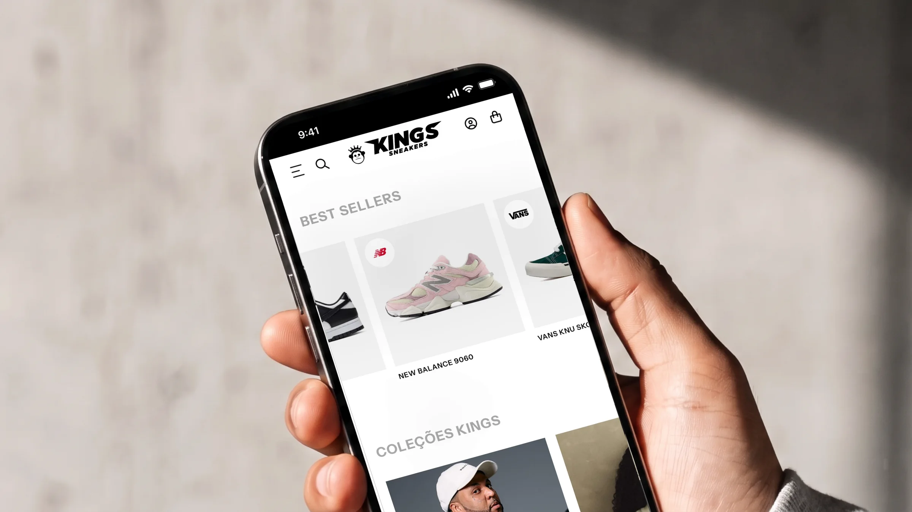
Kings Sneakers
The storefront steps aside so the product can shine.
Layout for the new Kings Sneakers online store, a Brazilian chain of urban lifestyle stores with more than 20 years on the streets. Together with the agency TEC4U, I designed the full store experience in Figma — home, product listing, product page, cart, search, menu and institutional pages, on desktop and mobile. Development was handled by TEC4U.
Visit site ↗Kings sells Nike, Adidas, Jordan, New Balance and its own label to an audience that knows its product. The challenge was a layout that could handle a large catalog, campaigns that change every week and prices with Pix and installments, without turning into a cluttered storefront. The answer was a black-and-white interface with a firm grid and plenty of room, one that steps aside so products and campaigns can shine.
The card is the most repeated piece in the store, so it was designed first. Brand badge in the corner, photo on a neutral gray background, name in uppercase and, right below, the full price next to the Pix price in green, with interest-free installments on the next line. The discount shows up before the click. On mobile, the Buy button sits right on the card.
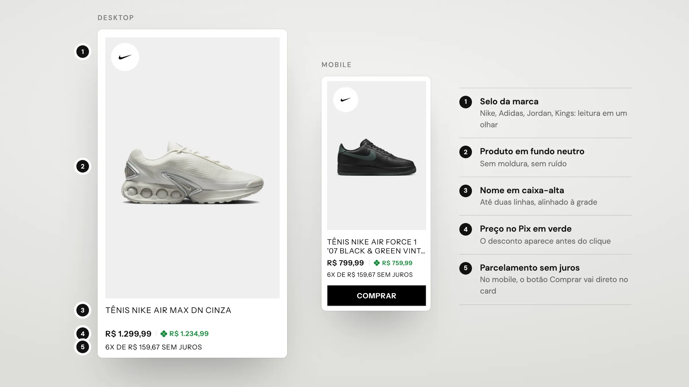
The layout doesn't rely on a rigid column grid: it is built from auto-layout with a few rules, repeated on every page. A 32px margin on desktop and 16px on mobile, a short spacing scale (12, 16, 24, 32, 64 and 82) and modules that fit together. The 310px card with 16px of breathing room builds every product shelf and bleeds past the right margin to hint at dragging. On the product page, the 2×2 gallery of 2:3 photos takes the first two columns and the buying panel the third. On mobile, two 165.5px columns with 12px between them and 24px between rows.
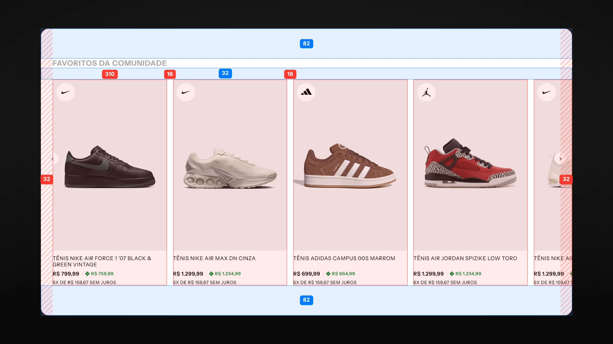
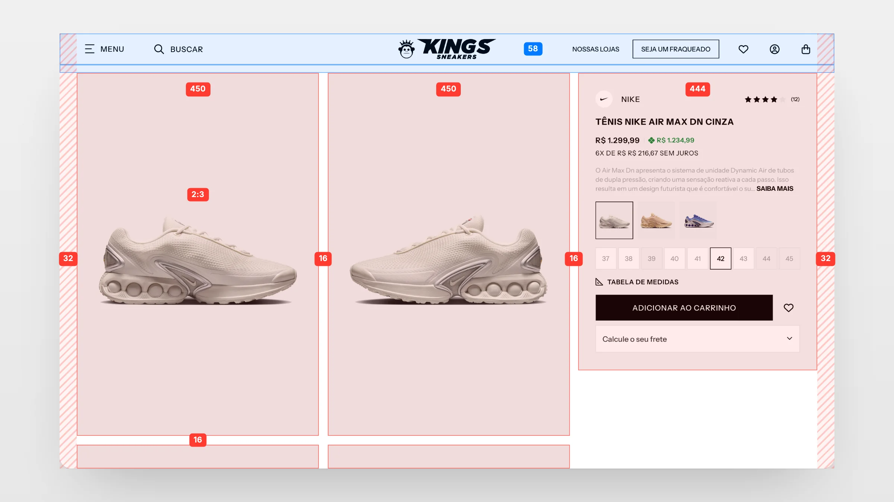
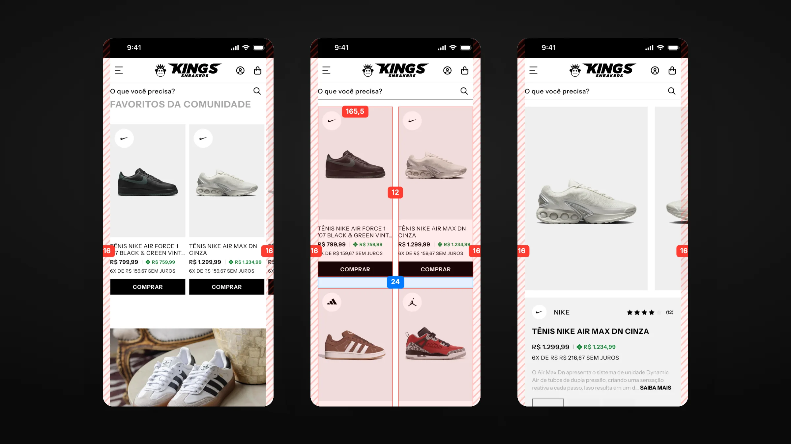
The home alternates product shelves with editorial blocks. Categories carry Men and Women right on the card, one click less to the listing. The Look of the moment pairs a photo of who's wearing it, credited to their profile, with the products of the look in a carousel beside it, in tabs to switch looks without leaving the page.
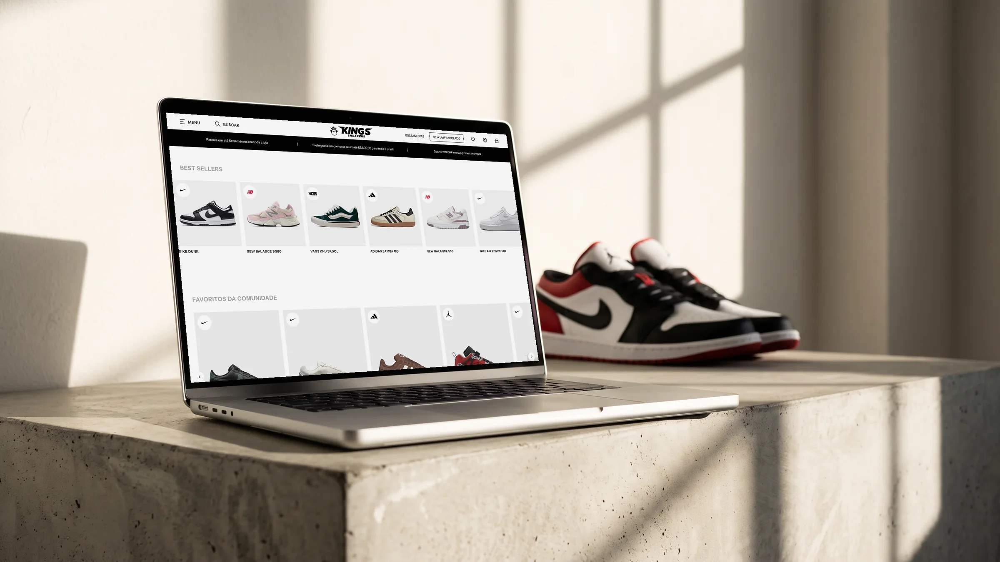
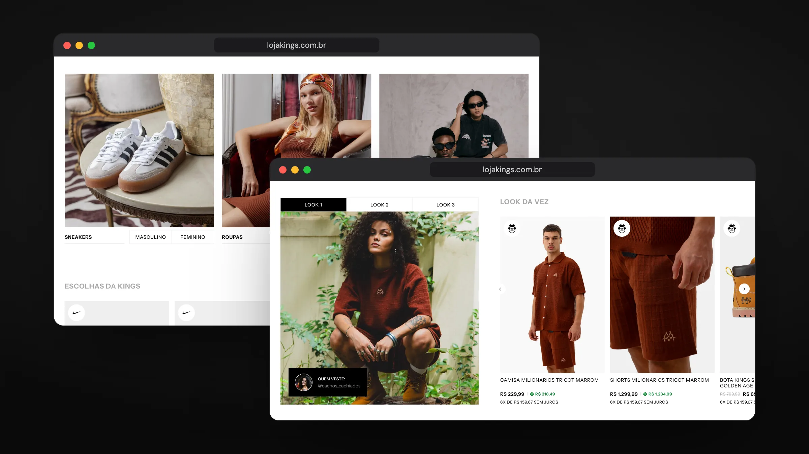
Black, white and a firm grid: the product is what stands out.
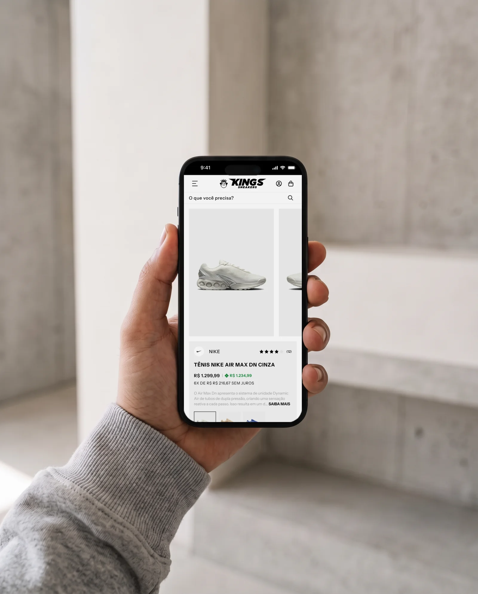
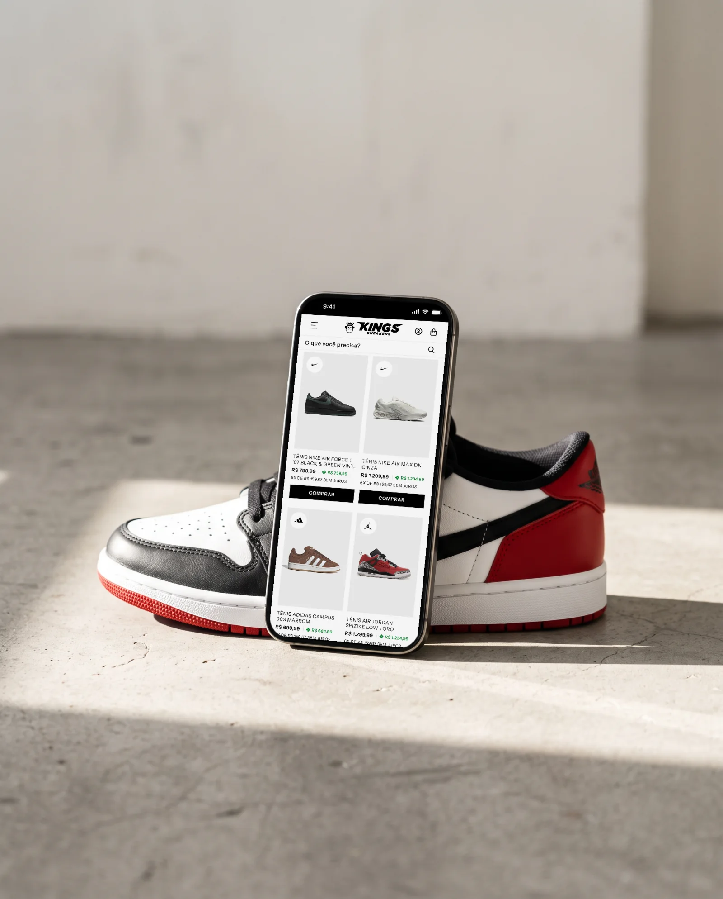
On the listing page, filters in a drawer keep the four-column grid free, with an editorial category card opening the shelf. On the product page, a large gallery shares the screen with a fixed buying panel: brand and rating, Pix price, colors, sizes, size chart and shipping calculator, all above the fold.
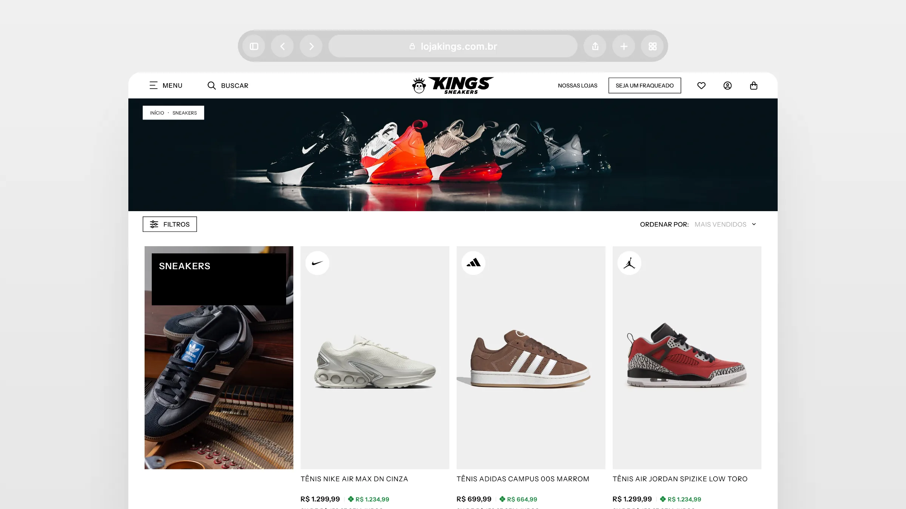
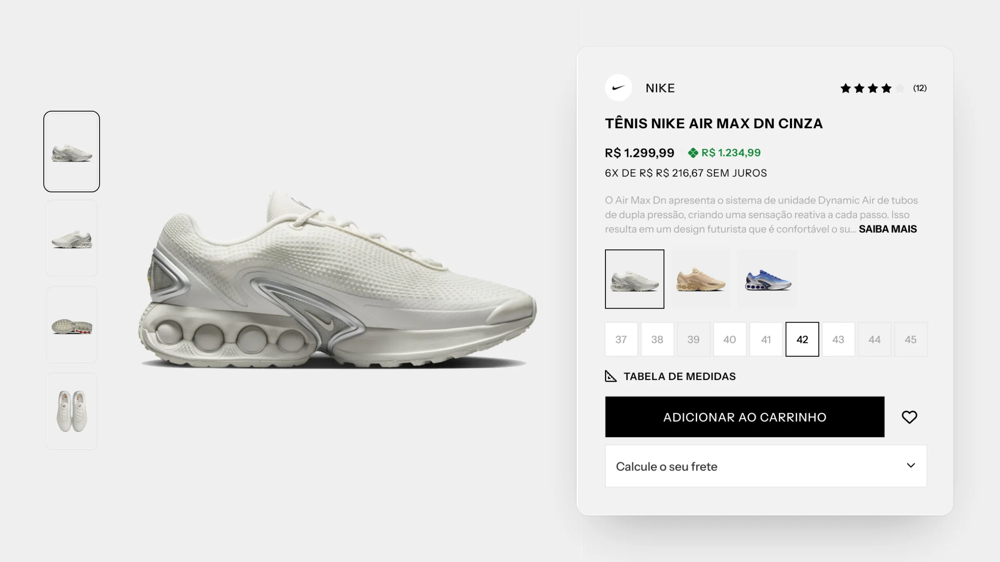
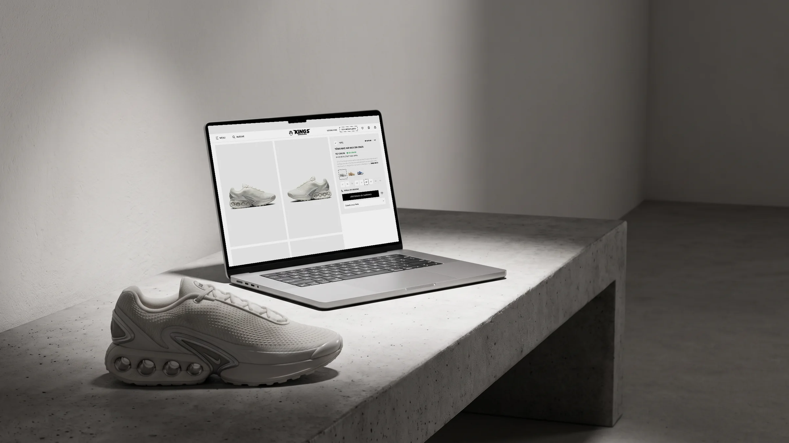
Below the purchase, Complete the look suggests pieces that go with the product and offers the set at a Pix discount, in a single button. The block was designed to raise the order value without pushing: it shows up after the main decision has already been made. The side cart follows the same logic: coupon, total and the buy button always in view.
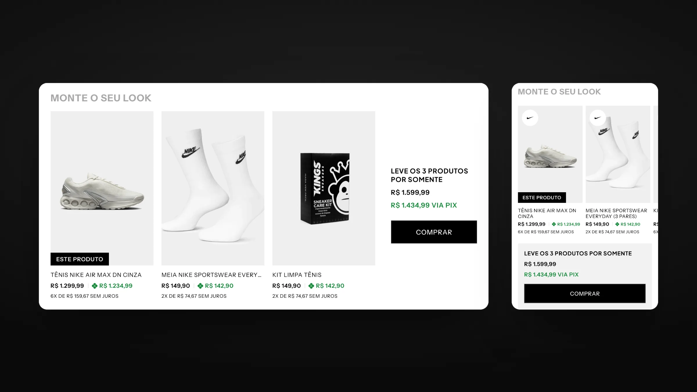
On the phone, the fixed header brings together menu, logo, account, bag and an always-at-hand search. The drawer menu highlights Sale and the current collection, search opens with suggestions and the side cart shows coupon and total without taking people off the page.
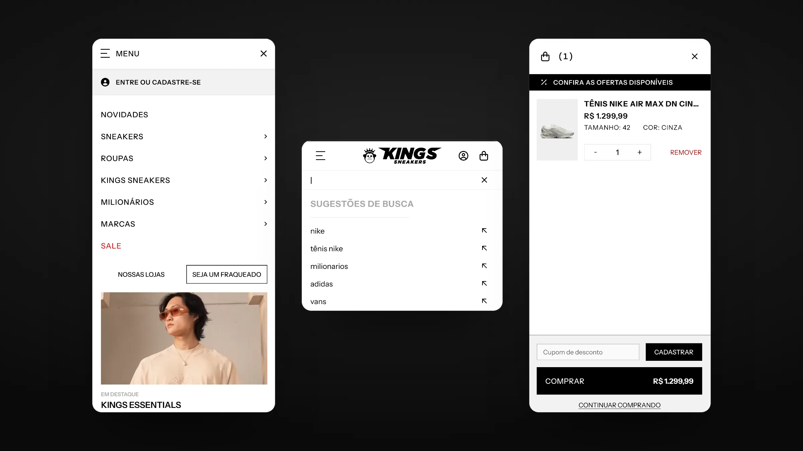
The layout, desktop and mobile, is my own work. The banners and campaign photos belong to Kings, and the store was built by TEC4U.
- Layout (UI/UX)
- Nícolas de Queiróz
- Development
- TEC4U
- Banners and campaign photos
- Kings Sneakers
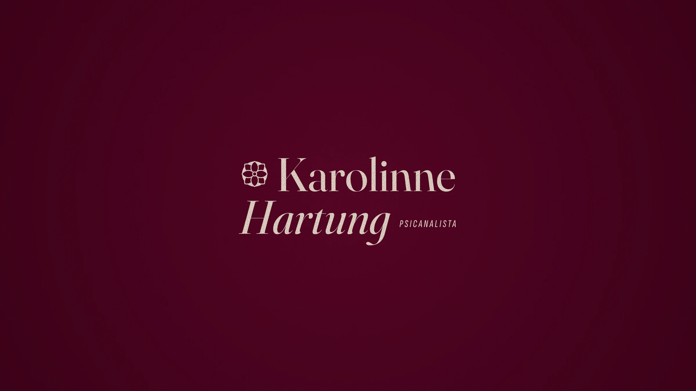